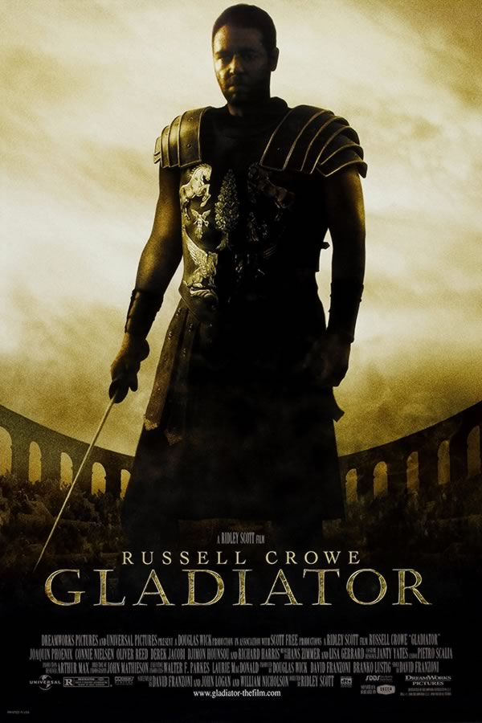

- Batman: O Cavaleiro das Trevas
- Vingadores: Ultimato
- Gladiador  Sinopse
- Bastardos Inglórios Sinopse
- Matrix
 Sinopse
Sinopse
Batman tem conseguido manter a ordem em Gotham com a ajuda de Jim Gordon e Harvey Dent. No entanto, um jovem e anárquico criminoso, conhecido apenas como Coringa, pretende testar o Cavaleiro das Trevas e mergulhar a cidade em um verdadeiro caos.
Prime video MAX Sinopse
Sinopse
Após Thanos eliminar metade das criaturas vivas, os Vingadores têm de lidar com a perda de amigos e entes queridos. Com Tony Stark vagando perdido no espaço sem água e comida, Steve Rogers e Natasha Romanov lideram a resistência contra o titã louco.
Disney+Maximus é um poderoso general romano, amado pelo povo e pelo imperador Marcus Aurelius. Antes de sua morte, o Imperador desperta a ira de seu filho Commodus ao tornar pública a sua predileção em deixar o trono para Maximus. Sedento pelo poder, Commodus mata seu pai, assume a coroa e ordena a morte de Maximus, que consegue fugir antes de ser pego, e passa a se esconder como um escravo e gladiador enquanto vai atrás de vingança.
Prime video GloboplayDurante a Segunda Guerra Mundial, na França, judeus americanos espalham o terror entre o terceiro Reich. Ao mesmo tempo, Shosanna, uma judia que fugiu dos nazistas, planeja vingança quando um evento em seu cinema reunirá os líderes do partido.
Prime video Globoplay Sinopse
Sinopse
O jovem programador Thomas Anderson é atormentado por estranhos pesadelos em que está sempre conectado por cabos a um imenso sistema de computadores do futuro. À medida que o sonho se repete, ele começa a desconfiar da realidade. Thomas conhece os misteriosos Morpheus e Trinity e descobre que é vítima de um sistema inteligente e artificial chamado Matrix, que manipula a mente das pessoas e cria a ilusão de um mundo real enquanto usa os cérebros e corpos dos indivíduos para produzir energia.
Prime video MAX